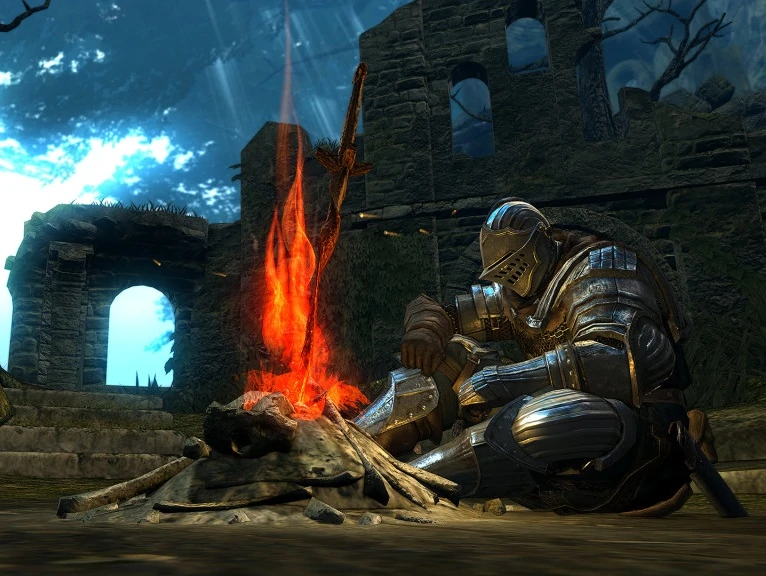

Acerca del anime
El anime es un estilo de animación tradicional o por computadora
de origen japonés.
Si bien en este mundo existen varios tipos de animes como lo son:
Aventura
Accion
Comedia
Ficcion
Romance
Drama
Hoy vengo a hablarte sobre unos generos mas especificos y dirijidos a cierto publico en especifico
Dirijido a niñas o jovenes. La trama
se enfoca en historias centradas en
drama, romance y otros eventos.
Genero dirigido a un publico maduro,
contiene temas complejos y algunos
no apropiados para los mas jovenes
Genero dirigido a un publico maduro,
contiene temas complejos y algunos
no apropiados para los mas jovenes
Dirijido a un publico infantil. Su trama
se centra en temas infantiles y en
algunos casos lecciones de vida.
Genero dirijido a publico adolescente. La trama gira en torno a la
reencarnación del protagonista en otro mundo.
Genero dirijido a un publico adulto, trata
temas sexuales explicitos de
diferentes formas.
(Trabajando en el carrusel de imagenes, descansa y regresa mas tarde...)
Regresar Arriba